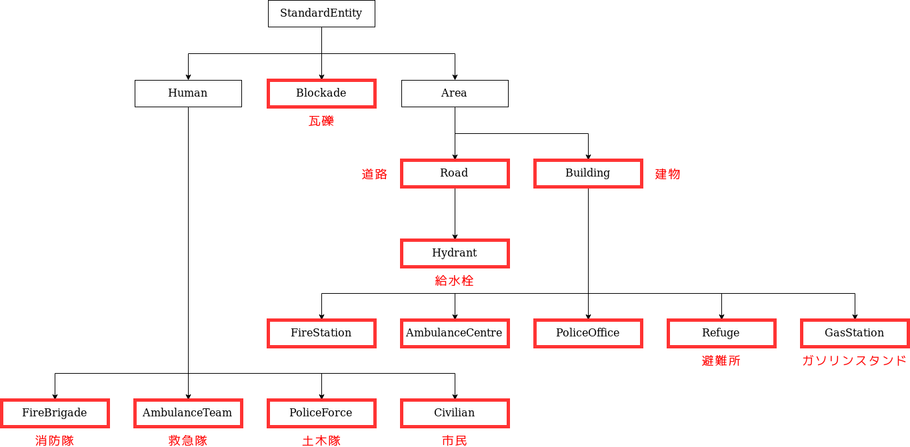

エージェントの制御
このセクションでは、エージェントの制御用のプログラムを作成する方法について説明します。
エージェントの制御について
RRSの災害救助エージェントは3種類あり、種類毎にそれぞれ異なるプログラムを書く必要があります。しかし、初めから全てのプログラムを書くことは困難です。ここではまず初めに、消防隊エージェントを操作するプログラムの一部を書いてみましょう。
注釈
エージェントを操作するプログラムは、エージェントの種類毎に同一です。 プログラムは各エージェントに配られ、そのエージェントのみの操作を担います。 消防隊エージェントを操作するプログラムを書けば、それがすべての消防隊エージェント上でそれぞれ動作します。

エージェントの動作フロー
エージェントの動作を決めているのはTacticsというプログラムです。
消防隊の思考ルーチンは下の図の通りにおおよそおこなわれます。 消防隊の動作としては、まず救助対象の市民を捜索し(Human Detector)、見つかった市民を救助します(Action Rescue)。 救助対象の市民が見つからない場合は、探索場所を変更して市民を捜索するため、次の捜索場所を決定して(Search)移動します(Action Ext move)。 なお、エージェントは1ステップ内で、移動と救助活動を同時におこなうことが出来ません。つまり、ステップごとに更新される自身の周辺情報を確認して、動作の対象と動作内容を決定していくということになります。 これらそれぞれの機能が、モジュールと呼ばれるプログラムとして分割して表現されています。
今回はこの中で、救助（掘り起こし）対象を決定する Human Detector モジュールを開発します。

Human Detector モジュールの実装の準備
まず、Human Detector モジュールを記述するためのファイルを作成します。
cd WORKING_DIR/<your_team_name>
touch src/<your_team_name>/module/complex/fire_brigade_human_detector.py
次に、Human Detector モジュールの雛形の実装を行います。 以下のコードをfire_brigade_human_detector.py に記述してください。
from typing import Optional
from rcrs_core.worldmodel.entityID import EntityID
from adf_core_python.core.agent.develop.develop_data import DevelopData
from adf_core_python.core.agent.info.agent_info import AgentInfo
from adf_core_python.core.agent.info.scenario_info import ScenarioInfo
from adf_core_python.core.agent.info.world_info import WorldInfo
from adf_core_python.core.agent.module.module_manager import ModuleManager
from adf_core_python.core.component.module.complex.human_detector import HumanDetector
from adf_core_python.core.logger.logger import get_agent_logger
class FireBrigadeHumanDetector(HumanDetector):
def __init__(
self,
agent_info: AgentInfo,
world_info: WorldInfo,
scenario_info: ScenarioInfo,
module_manager: ModuleManager,
develop_data: DevelopData,
) -> None:
super().__init__(
agent_info, world_info, scenario_info, module_manager, develop_data
)
# 計算結果を格納する変数
self._result: Optional[EntityID] = None
# ロガーの取得
self._logger = get_agent_logger(
f"{self.__class__.__module__}.{self.__class__.__qualname__}",
self._agent_info,
)
def calculate(self) -> HumanDetector:
"""
行動対象を決定する
Returns
-------
HumanDetector: 自身のインスタンス
"""
self._logger.info("Calculate FireBrigadeHumanDetector")
return self
def get_target_entity_id(self) -> Optional[EntityID]:
"""
行動対象のEntityIDを取得する
Returns
-------
Optional[EntityID]: 行動対象のEntityID
"""
return self._result
モジュールの登録
次に、作成したモジュールを登録します。
WORKING_DIR/<your_team_name>/config/module.yaml ファイルを開き、以下の部分を
DefaultTacticsFireBrigade:
HumanDetector: src.<your_team_name>.module.complex.sample_human_detector.SampleHumanDetector
以下のように変更してください。
DefaultTacticsFireBrigade:
HumanDetector: src.<your_team_name>.module.complex.fire_brigade_human_detector.FireBrigadeHumanDetector
ターミナルを2つ起動します。
片方のターミナルを開き、シミュレーションサーバーを以下のコマンドで起動します：
# Terminal A
cd WORKING_DIR/rcrs-server/scripts
./start-comprun.sh -m ../maps/tutorial_fire_brigade_only/map -c ../maps/tutorial_fire_brigade_only/config
その後、別のターミナルを開き、エージェントを起動します：
# Terminal B
cd WORKING_DIR/<your_team_name>
python main.py
標準出力に Calculate FireBrigadeHumanDetector と表示されれば成功です。
Human Detector モジュールの設計
救助対象選択プログラムの中身を書き、消防隊エージェントが救助活動をおこなえるように修正します。
消防隊エージェントの救助対象を最も簡単に選択する方法は、埋没している市民の中で最も自身に近い市民を選択する方法です。 今回は、この方法を採用した消防隊エージェントの行動対象決定モジュールを書いてみましょう。
埋没している市民の中で最も自身に近い市民を救助対象として選択する方法は、フローチャートで表すと下図のようになります。

このフローチャート中の各処理を、次小節で紹介する各クラス・メソッド等で置き換えたものを、fire_brigade_human_detector.py に記述していくことで、救助対象選択プログラムを完成させます。
Human Detector モジュールの実装で使用するクラス・メソッド
Entity
Entity クラスは、エンティティの基底クラスです。 このクラスは、エンティティの基本情報を保持します。
RRS上のエンティティは下図のように Entity を継承したクラスで表現されています。 赤枠で囲まれたクラスは、クラスの意味がそのままRRSの直接的な構成要素を表しています。
例: Road クラスのインスタンスの中には、 Hydrant クラスを継承してない通常の道路を表すものも存在しています。

EntityID
EntityID クラスは、全てのエージェント/オブジェクトを一意に識別するためのID(識別子)を表すクラスです。 RRSではエージェントとオブジェクトをまとめて、エンティティと呼んでいます。
Civilian
Civilian クラスは、市民を表すクラスです。このクラスからは、エージェントの位置や負傷の進行状況を取得することができます。
entityが市民であるかどうかを判定する
is_civilian: bool = isinstance(entity, Civilian)
エンティティIDを取得する
entity_id: EntityID = entity.get_id()
市民が生きているかどうかを判定する
hp: Optional[int] = entity.get_hp()
if hp is None or hp <= 0:
return False
市民が埋まっているかどうかを判定する
buriedness: Optional[int] = entity.get_buriedness()
if buriedness is None or buriedness <= 0:
return False
WorldInfo
WorldInfo クラスは、エージェントが把握している情報とそれに関する操作をおこなうメソッドをもったクラスです。 エージェントはこのクラスのインスタンスを通して、他のエージェントやオブジェクトの状態を確認します。
モジュール内では、WorldInfo クラスのインスタンスを self._world_info として保持しています。
エンティティIDからエンティティを取得する
entity: Entity = self._world_info.get_entity(entity_id)
指定したクラスのエンティティを全て取得する
entities: list[Entity] = self._world_info.get_entities_by_type([Building, Road])
エージェントの位置から指定したエンティティまでの距離を取得する
distance: float = self._world_info.get_distance(me, civilian.get_id())
AgentInfo
AgentInfo クラスは、エージェント自身の情報とそれに関する操作をおこなうメソッドをもったクラスです。 エージェントはこのクラスのインスタンスを通して、エージェント自身の状態を取得します。
モジュール内では、AgentInfo クラスのインスタンスを self._agent_info として保持しています。
自分自身のエンティティIDを取得する
my_entity_id: EntityID = self._agent_info.get_entity_id()
Human Detector モジュールの実装
Human Detector モジュールの実装を行います。
以下のコードをfire_brigade_human_detector.py に記述してください。
from typing import Optional
from adf_core_python.core.agent.develop.develop_data import DevelopData
from adf_core_python.core.agent.info.agent_info import AgentInfo
from adf_core_python.core.agent.info.scenario_info import ScenarioInfo
from adf_core_python.core.agent.info.world_info import WorldInfo
from adf_core_python.core.agent.module.module_manager import ModuleManager
from adf_core_python.core.component.module.complex.human_detector import HumanDetector
from adf_core_python.core.logger.logger import get_agent_logger
from rcrs_core.entities.civilian import Civilian
from rcrs_core.entities.entity import Entity
from rcrs_core.worldmodel.entityID import EntityID
class FireBrigadeHumanDetector(HumanDetector):
def __init__(
self,
agent_info: AgentInfo,
world_info: WorldInfo,
scenario_info: ScenarioInfo,
module_manager: ModuleManager,
develop_data: DevelopData,
) -> None:
super().__init__(
agent_info, world_info, scenario_info, module_manager, develop_data
)
# 計算結果を格納する変数
self._result: Optional[EntityID] = None
# ロガーの取得
self._logger = get_agent_logger(
f"{self.__class__.__module__}.{self.__class__.__qualname__}",
self._agent_info,
)
def calculate(self) -> HumanDetector:
"""
行動対象を決定する
Returns
-------
HumanDetector: 自身のインスタンス
"""
# 自分自身のEntityIDを取得
me: EntityID = self._agent_info.get_entity_id()
# すべてのCivilianを取得
civilians: list[Entity] = self._world_info.get_entities_of_types(
[
Civilian,
]
)
# 最も近いCivilianを探す
nearest_civilian: Optional[EntityID] = None
nearest_distance: Optional[float] = None
for civilian in civilians:
# civilianがCivilianクラスのインスタンスでない場合はスキップ
if not isinstance(civilian, Civilian):
continue
# civilianのHPが0以下の場合はすでに死んでしまっているのでスキップ
if civilian.get_hp() <= 0:
continue
# civilianの埋没度が0以下の場合は掘り起こす必要がないのでスキップ
if civilian.get_buriedness() <= 0:
continue
# 自分自身との距離を計算
distance: float = self._world_info.get_distance(me, civilian.get_id())
# 最も近いCivilianを更新
if nearest_distance is None or distance < nearest_distance:
nearest_civilian = civilian.get_id()
nearest_distance = distance
# 計算結果を格納
self._result = nearest_civilian
# ロガーに出力
self._logger.info(f"Target: {self._result}")
return self
def get_target_entity_id(self) -> Optional[EntityID]:
"""
行動対象のEntityIDを取得する
Returns
-------
Optional[EntityID]: 行動対象のEntityID
"""
return self._result
ターミナルを2つ起動します。
片方のターミナルを開き、シミュレーションサーバーを以下のコマンドで起動します：
# Terminal A
cd WORKING_DIR/rcrs-server/scripts
./start-comprun.sh -m ../maps/tutorial_fire_brigade_only/map -c ../maps/tutorial_fire_brigade_only/config
その後、別のターミナルを開き、エージェントを起動します：
# Terminal B
cd WORKING_DIR/<your_team_name>
python main.py
埋没している市民を消防隊エージェントが救出できるようになっていれば成功です。